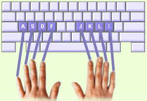

Dans leur position de base, vos doigts restent sur la ligne centrale du clavier. C'est depuis ces touches de base que toutes les autres touches peuvent être atteintes.
Maintenant placez vos doigts sur les touches de base :
1. Placez les doigts de votre main gauche sur les touches A S D F.
2. Placez les doigts de votre main droite sur les touches J K L ;
(J K L é sur le clavier QWERTZ suisse).
3. Laissez vos pouces reposer légèrement sur la barre d'Espace.
4. Gardez vos poignets droits et vos doigts légèrement courbés.
Conseil ! Sentez-vous des reliefs sur les touches F et J ? Ils sont là pour vous aider à trouver les touches de base sans regarder le clavier. |
 |